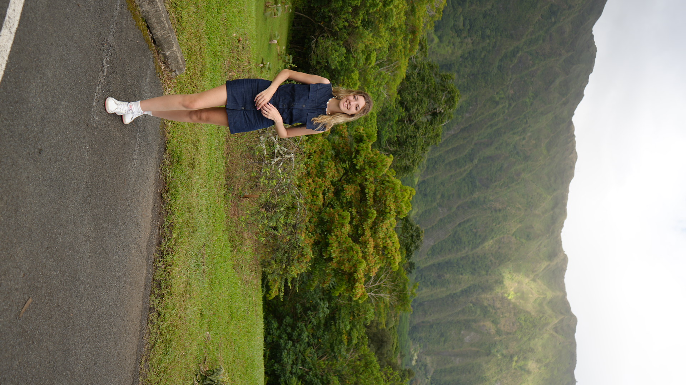
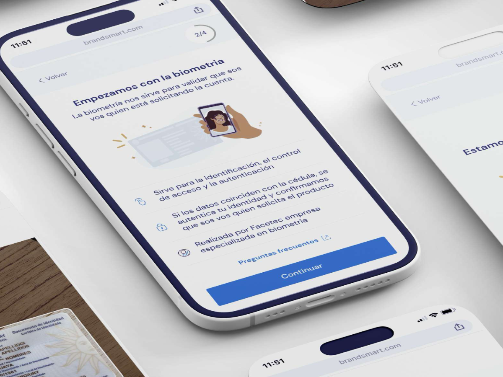
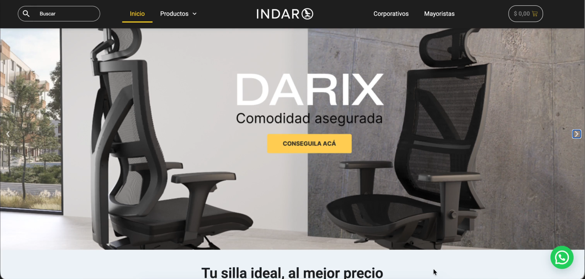

Design that makes things easier. Diseño que hace las cosas más fáciles.
I love creating solutions that make the user experience easier and more accessible. I'm motivated to contribute digitally through design. Me encanta crear soluciones que hagan la experiencia del usuario más fácil y accesible. Me motiva contribuir digitalmente a través del diseño.

I'm Flor, a UX/UI designer based in Buenos Aires, Argentina. Soy Flor, diseñadora UX/UI radicada en Buenos Aires, Argentina.
With 6 years of experience in the design world — both in the Latin American and U.S. markets — every role and project I've worked on has brought me value and knowledge, shaping the designer I am today. Always waiting for new challenges. Con 6 años de experiencia en el mundo del diseño — tanto en el mercado latinoamericano como en el de EE. UU. — cada rol y proyecto me trajo valor y conocimiento, formando a la diseñadora que soy hoy. Siempre esperando nuevos desafíos.
Selected workTrabajo seleccionado
Cuatro proyectos
DOOR RedesignRediseño de DOOR
A full redesign of DOOR OS, both mobile apps and DOOR.com, with a team of five designers. Dev-ready in four weeks and in production a month later.Rediseño integral de DOOR OS, las dos apps y DOOR.com, con un equipo de cinco diseñadores. Listo para desarrollo en cuatro semanas y en producción un mes después.
Case study in progressCaso de estudio en curso→
DOOR devices, new UXDispositivos DOOR, nueva UX
Quick access, device details and the installation flow, rebuilt as one template each — plus the Figma file they all live in.Acceso rápido, detalle de dispositivo y flujo de instalación, rehechos como una plantilla cada uno — más el archivo de Figma donde viven.
Full projectVer proyecto→
Biometrics in a bank's acquisition flowBiometría en el flujo de alta de un banco
A project for a banking entity in Uruguay, whose name we're keeping confidential. With the help of AI, it aimed to detect document forgery and reduce fraud cases.Un proyecto para una entidad bancaria de Uruguay, cuyo nombre mantenemos confidencial. Con ayuda de IA, buscaba detectar falsificación de documentos y reducir casos de fraude.
Full projectVer proyecto→
A new ecommerce, redesigned and builtUn nuevo ecommerce, rediseñado e implementado
Redesign and implementation of the Indar Equipamientos online store: catalogue structure, product pages and checkout, plus the front-end work to put it live.Rediseño e implementación de la tienda online de Indar Equipamientos: estructura del catálogo, fichas de producto y checkout, más el trabajo de front-end para publicarla.
Full projectVer proyecto→ExperienceExperiencia
Design of user-centric flows for both app and web, focusing on functionality. Decision-making based on UX principles, analyzing and mapping use cases. Maintenance and development of the design system for both app and web. Using Claude AI to improve work processes and Claude Code to update code for both app and web.Diseño de flujos centrados en el usuario para app y web, con foco en la funcionalidad. Decisiones basadas en principios de UX, con análisis y mapeo de casos de uso. Mantenimiento y desarrollo del design system para app y web. Uso de Claude AI para agilizar procesos de trabajo y de Claude Code para actualizar código de la app y la web.
Project management, time tracking and team training. Designed and prototyped web proposals focused on functionality and UX using Figma, with Agile/Scrum methodologies. Performed front-end development using different programming languages as required.Gestión de proyectos, seguimiento de tiempos y formación del equipo. Diseño y prototipado de propuestas web centradas en la funcionalidad y la UX usando Figma, con metodologías Agile/Scrum. Desarrollo front-end con distintos lenguajes según lo requerido.
Freelance brand consultant since 2024, managing Indar's digital communication.Consultora de marca freelance desde 2024, a cargo del control y la gestión de la comunicación digital.
Leadership of a team of two designers, encouraging innovation and personal growth.Liderazgo de un equipo de dos diseñadoras, fomentando la innovación y el crecimiento personal.
Art direction and crafting of social media pieces. Leading marketing campaigns and management of social media.Dirección de arte y creación de piezas para redes sociales. Liderazgo de campañas de marketing y gestión de redes sociales.